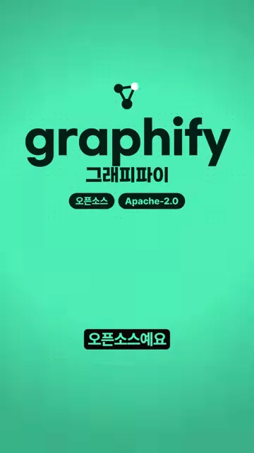
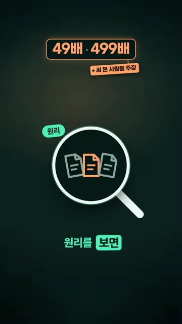
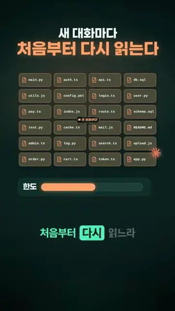
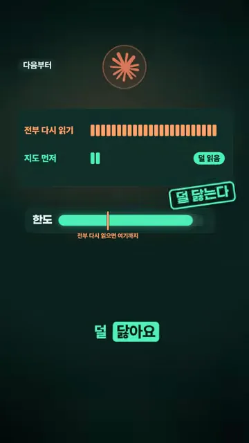
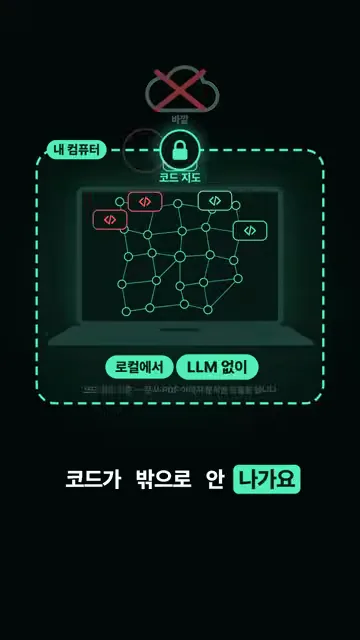
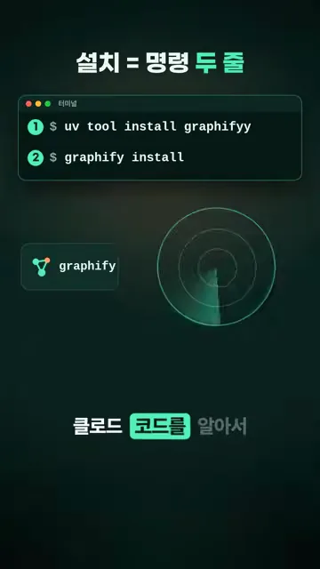
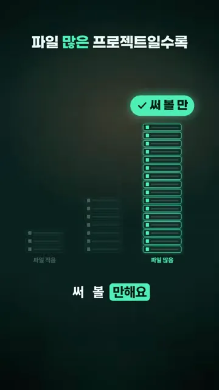

graphify는 어떤 도구인가요
graphify는 클로드 코드가 쓰는 토큰을 줄여 준다는 무료 도구예요. 영상 첫 장면에서 로고 아래에 한글 이름 '그래피파이'와 함께 '오픈소스', 'Apache-2.0' 두 꼬리표가 붙어 있어요. 누구나 가져다 쓰고 고칠 수 있는 공개 코드라는 뜻이에요. 발표자는 GitHub 별이 12만 개를 넘었다고 소개해요.

제목의 49배라는 숫자는 영상 안에서 '많게는 499배'로 한 번 더 커져요. 다만 화면 속 '49배 · 499배' 꼬리표 옆에 '써 본 사람들 주장'이라는 작은 딱지가 붙어 있어요. 발표자 스스로 측정값이 아니라 사용자들이 말한 값이라고 밝혀 두는 거예요. 그 아래 돋보기 그림과 함께 '원리'로 넘어가요.

토큰이 줄어드는 원리
토큰이 새는 곳부터 짚어요. 클로드 코드는 새 대화를 열면 앞 대화에서 읽은 코드를 기억하지 못해요. 화면 위쪽 문구가 '새 대화마다 처음부터 다시 읽는다'예요. 아래에 main.py, auth.ts, api.ts 같은 파일 칸 스물네 개가 깔려 있고, 맨 아래 '한도' 막대가 주황색으로 줄어들어 있어요. 파일을 다시 읽는 만큼 사용 한도가 깎인다는 그림이에요.

graphify를 한 번 돌리면 이 파일들이 점과 선으로 이어진 지도가 돼요. 아래 화면에서 점 하나하나가 index.js, token.ts, login.ts 같은 파일이고, 그 사이를 초록 선이 잇고 있어요. 제목처럼 '호출까지 다 연결'한 게 핵심이에요. 어떤 함수가 어느 파일에서 불리는지까지 지도에 담겨요. 이런 연결 구조를 지식 그래프라고 불러요.

그다음부터 클로드는 파일을 전부 다시 읽는 대신 지도에 먼저 물어봐요. 아래 화면이 두 방식을 나란히 비교해요. 위쪽 '전부 다시 읽기'는 주황 막대가 끝까지 길고, '지도 먼저'는 막대 두 칸 옆에 '덜 읽음' 표시가 붙어요. 아래 한도 막대에는 '전부 다시 읽으면 여기까지'라는 눈금이 있어요. 지도를 쓰면 한도가 그 눈금 너머까지 남아요.

영상이 보여 준 두 방식을 표로 정리하면 이래요.
| 방식 | 새 대화에서 클로드가 하는 일 | 사용 한도 |
|---|---|---|
| 전부 다시 읽기 | 코드 파일을 처음부터 다시 읽어요 | 매번 크게 깎여요 |
| 지도 먼저 | 지도에 먼저 묻고 짚어 준 곳만 읽어요 | 덜 닳아요 |
내 컴퓨터 안에서, 명령 두 줄로
코드를 외부에 맡기는 게 걱정이라면 이 부분이 답이에요. 코드 지도는 내 컴퓨터 안에서만 만들어요. 화면을 보면 노트북을 점선 상자가 감싸고 있고, 위쪽 구름 아이콘에는 빨간 X가 그어져 있어요. 상자 아래에는 '로컬에서', 'LLM 없이' 두 꼬리표가 붙어 있어요. 지도를 만들 때 코드가 바깥 서버로 나가지 않는다는 뜻이에요.

설치는 명령 두 줄이에요. 아래 터미널 화면의 1번 줄이 도구를 까는 명령, 2번 줄이 클로드 코드에 붙이는 명령이에요. 두 번째 명령을 돌리면 클로드 코드를 알아서 찾아서 연결해 준다고 해요.

uv tool install graphifyy
graphify install어떤 프로젝트에 맞을까요. 마지막 화면은 '파일 적음'과 '파일 많음' 프로젝트를 막대로 비교해요. 파일이 많은 쪽 막대가 훨씬 높고, 그 위에 '써 볼 만' 딱지가 붙어요. 파일이 많을수록 매번 다시 읽는 양이 커지니 지도로 아끼는 몫도 커진다는 뜻이에요.
